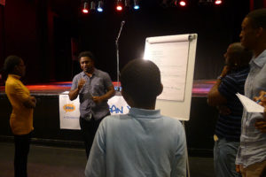

EDUCATION
EYFS, KEY STAGE 1, 2, 3, 4 FURTHER ADULT EDUCATION AND CPD
I offer a bespoke service to educational institutions based on their specific needs and requirements, through my creative education programme; working directly with students and providing INSETS, training and mentoring for educators.
PARENTAL SUPPORT
We provide a private and sensitive one to one practice, which is both responsive and empathetic, as well as pairs and group work. parenting is one of the hardest jobs in the world and we aim to enhance your healthy practices; and support you in identifying and developing the areas, you may feel less experienced or confident in, judgement free.
ENHANCED TEACHING AND LEARNING
My ETL programme looks at teaching styles and lesson planning with an aim to support teachers in making their subject areas more engaging to challenging classes and large group sizes.
PEDAGOGY:
Emotional Intelligence (EQ)
The capacity to be aware of, control, and express one’s emotions, and to handle interpersonal relationships judiciously and empathetically.
Metacognition in Education
Metacognition is “cognition about cognition”, “thinking about thinking”, “knowing about knowing”, becoming “aware of one’s awareness” and higher-order thinking skills. … Metacognition can take many forms; it includes knowledge about when and how to use particular strategies for learning or problem-solving.
Cognition vs Metacognition
It is often difficult to distinguish the difference between cognition and metacognition. They are closely related and can often overlap. … Cognition is a mental process that include memory, attention, producing and understanding language, reasoning, learning, problem-solving and decision making.
Coaching
“Coaching psychology is for enhancing well-being and performance in personal life and work domains underpinned by models of coaching grounded in established adult and child learning or psychological approaches”.
Clarity 4D
Clarity4D personality profiles offer a development process which creates positive results in personal and professional relationships.
Mindfulness
“the practice of maintaining a non-judgmental state of heightened or complete awareness of one’s thoughts, emotions, or experiences on a moment-to-moment basis.” Basically, mindfulness means being aware of and controlling your experience.
Group Dynamics
A group can be defined as several individuals who come together to accomplish a particular task or goal. Group dynamics refers to the attitudinal and behavioural characteristics of a group. Group dynamics concern how groups form, their structure and process, and how they function.
Team Cohesion
Team cohesion is the strength and extent of interpersonal connection existing among the members of a group. It is this interpersonal bond that causes members to participate readily and remain motivated to accomplish the set goals.
Creative Education
Creative education is when students are able to use imagination and critical thinking to create new and meaningful forms of ideas where they can take risks, be independent and flexible.
Instead of being taught to reiterate what was learned, students learn to develop their ability to find various solutions to a problem. Coming up with various out-of-the box solutions is known as divergent thinking and there is no one way of cultivating this skill – largely due to the newness of the concept and the limited scientific information on creativity.
Divergent Thinking
Divergent thinking is a thought process or method used to generate creative ideas by exploring many possible solutions. It is often used in conjunction with its cognitive colleague, convergent thinking, which follows a particular set of logical steps to arrive at one solution, which in some cases is a “correct” solution. By contrast, divergent thinking typically occurs in a spontaneous, free-flowing, “non-linear” manner, such that many ideas are generated in an emergent cognitive fashion. Many possible solutions are explored in a short amount of time, and unexpected connections are drawn. After the process of divergent thinking has been completed, ideas and information are organized and structured using convergent thinking.
Convergent Thinking
Convergent thinking is the ability to apply rules to arrive at a single “correct” solution to a problem, such as the answer to an achievement test question. In the convergent thinking process, choice is deliberate and conscious. Criteria are purposefully applied as we screen, select, evaluate, and refine the options, all the while knowing that raw ideas still need development.
Lateral Thinking
Lateral thinking is a manner of solving problems using an indirect and creative approach via reasoning that is not immediately obvious. It involves ideas that may not be obtainable using only traditional step-by-step logic.
Critical Thinking
Critical thinking is a thought process that involves gathering and evaluating information to make decisions and solve problems that you encounter.

YOUTH, COMMUNITY AND ARTS ORGANISATIONS:
YOUTH VIOLENCE AND YOUTH CRIME INTERVENTION
I deliver individual and group work, to support young people engaged in criminal activity and gang culture.
YOUTH, COMMUNITY AND ARTS ORGANISATIONS
I offer a bespoke arts service to youth, community and arts organisations, with a multidisciplinary approach, to meets their specific and unique needs and requirements through my unique arts programme:
- Solution Focused Thinking, Coaching, Group dynamics, Anger management, Mindset shifting
- Drama, performance movement and dance
- Capoeira
- Meditation and mindfulness
- Debate, public speaking and communication
- Creative writing, Art and cartooning
- Anti – Bullying
- Anti – Gang Culture
- Social Interaction
- Prevent
- Emotional resilience

PSC: Coaching © Facilitating Change and Personal Transformation
The philosopher’s stone, or stone of the philosophers is a legendary alchemical substance capable of turning base metals such as mercury into gold or silver.
Alchemy is the ancient art of magical transformation: The transmutation of lead into gold. The mundane, into the bedazzling.
PSC: Philosopher’s Stone Coaching © is the ability to enable people to challenge the perceptions they have of themselves, the limiting, negative, self-demeaning beliefs and transform them, to that of empowered, self-valued, inspired and motivated. This process not only impacts people personally, but they also become emotional alchemists themselves: becoming agents of change, where by the virtue of their mind-sets and actions, they have a wider impact, beyond personal gain.
One to one sessions
A welcoming and sensitive one to one practice, which is both responsive and empathetic, offering support in a wide range of areas:
- Relationships – with your loved ones, friends and colleagues
- Getting off to a great start in a new job
- Freeing up time to take on a new project
- Dealing with overwhelm and busyness
- Becoming a better listener
- Clarifying expectations between team members and with management
- Being a team player
- Self-image/perception
- Empathy
- Sensitivity
- Communication
- Motivation
- Interaction
- Self- esteem
- Lifestyle
- Mind-set
- Self-confidence
- Behaviour
- Attachment
- Finding your spark
- Regret
- Resentment
- inspiration
- Decision making
- Unconscious bias